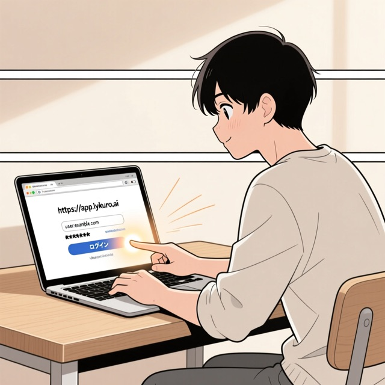
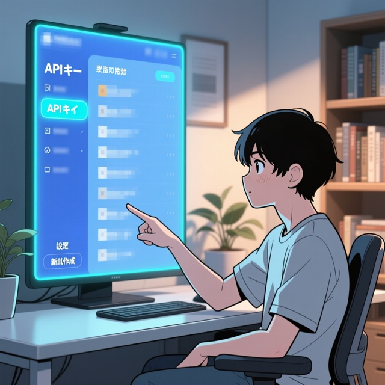
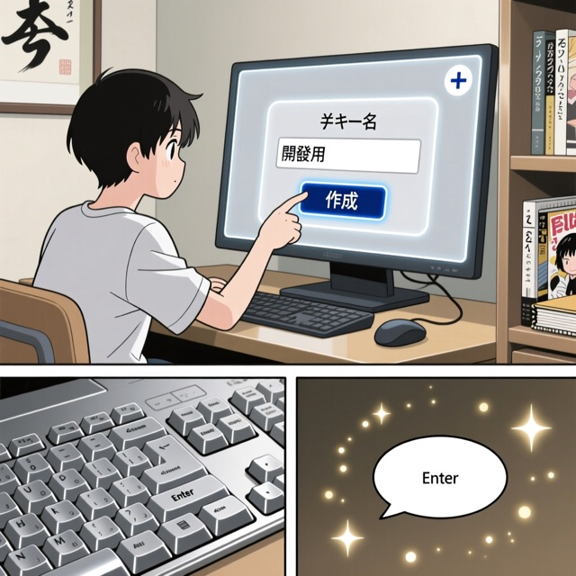
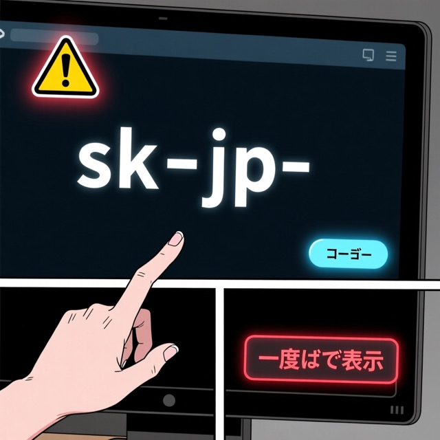
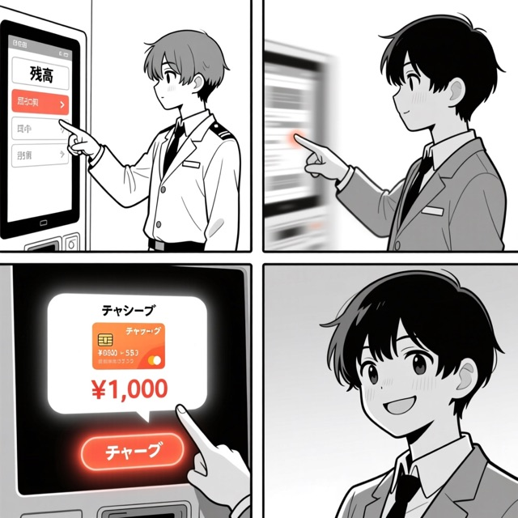
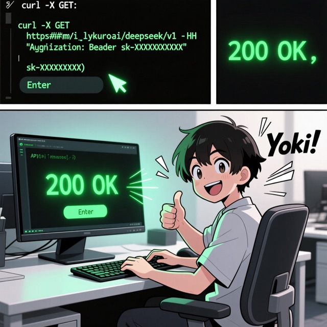

文字だけの操作マニュアル（入力）と、自動生成された漫画版（出力）のセット
入力 ─ テキスト生成 → 画像生成 → ビジョン点検 → 漫画版 ─ 出力
# Lykuro ダッシュボードで API キーを発行する手順 ## 手順1: ログインする ブラウザで https://app.lykuro.ai を開きます。メールアドレスとパスワードを入力し、 「ログイン」ボタンを押します。初めての方は「新規登録」から先にアカウントを作成してください。 ## 手順2: API キー画面を開く ログインすると左側にメニューが表示されます。メニューの中から「API キー」をクリックします。 これまでに発行したキーの一覧が表示されます。 ## 手順3: 新しいキーを発行する 画面右上の「＋ 新規発行」ボタンを押します。キーの名前（例: 開発用、本番用）を入力する ダイアログが開くので、用途が分かる名前を付けて「作成」を押します。 ## 手順4: キーを安全に控える 発行直後にだけ、完全な API キー（sk-jp- で始まる文字列）が一度だけ表示されます。 「コピー」ボタンでコピーし、パスワードマネージャーなど安全な場所に保管してください。 この画面を閉じると二度と全体は表示されません。 ## 手順5: 残高をチャージする API を呼び出すには前払い残高が必要です。メニューの「残高」を開き、「チャージ」ボタンから クレジットカードで入金します。少額（例: 1,000円）から始められます。 ## 手順6: 動作確認する ターミナルで base_url を https://api.lykuro.ai/deepseek/v1 に差し替え、発行したキーを使って 最初のリクエストを送ります。応答が返ってくればセットアップ完了です。

💬 ログインできたら、APIキー画面へGO！
ブラウザでLykuroアプリにアクセスし、メールアドレスとパスワードを入力してログインします。新規ユーザーは「新規登録」から始めましょう。

💬 ここから新しいキーを作ります！
ログイン後、左メニューから「API キー」をクリックします。既存のキー一覧が表示されます。

💬 名前はあとで分かりやすいように！
右上の「＋ 新規発行」ボタンを押すと、用途が分かる名前（例：開発用）を入力するダイアログが開きます。「作成」を押して発行しましょう。

💬 絶対に閉じちゃダメ！今だけ見られます！
発行直後に表示される完全なAPIキー（sk-jp-で始まる文字列）は、このタイミングでしか確認できません。必ず「コピー」して、パスワードマネージャーなど安全な場所に保存してください。

💬 ちょっとだけ入れて、さっそく試そう！
API利用には前払い残高が必要です。左メニューの「残高」からクレジットカードで少額（例：1,000円）からチャージできます。

💬 やった！接続成功♪
ターミナルでbase_urlを指定し、発行したAPIキーを使ってリクエストを送信。正常な応答（例：200 OK）が返れば、セットアップは完了です！